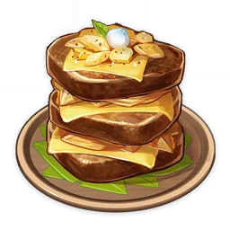

Pile 'Em Up

A rich, meaty dish. Originally a Mondstadt dish made of steaks, potatoes, and cheese.
It has since become synonymous with Ludi Harpastum.
Ingredients:
- 1 Cheese Slice
- 3 Potatoes
- 3 Raw Meat
- 1 Small Lamp Grass
Steps:
- Find a cooking station
- Boil the Potatoes
- Mash the Potatoes with the raw meat
- Make 3 Burger Patties using the mixture
- Fry the Burger and season with Small Lamp Grass
- Stack the burgers on top of each other and add the cheese slice
- Give the burger to a vegan for maximum emotional damage
Back to Home Page